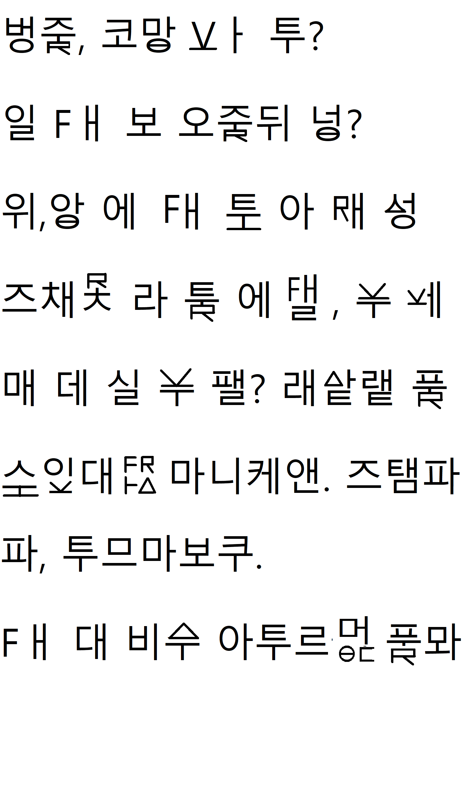

L'alphabet phonetic 'international' que nous avons elabores est un concept pour repondre a l'alphabet international trop complexe a apprendre. Cet alphabet n'est pas une copie de l'alphabet correen mais en est fortement inspire. Il ne vous permetra pas de vous en servir pour apprendre le coreen qui utilise differente regles de combinaison.
ㅂ ㅈ ㄷ ㄱ ㅁ ㄴ ㅇ ㄹ ㅎ ㅋ ㅌ ㅊ ㅍ ㅛ ㅗ ㅠ ㅕ ㅓ ㅜ ㅑ ㅏ ㅡ ㅐ ㅣ ㅔ Θ I V ᅀ F I X
